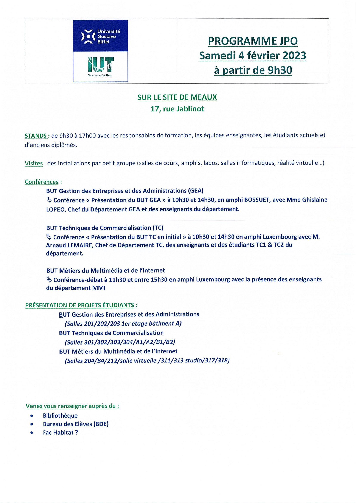

<div id="container">

    <div id="menu" *ngIf="isMenuvisible">
        <i class="bi bi-box-arrow-left" routerLink="/but-mmi" (click)="exitPointLockOnReturn()"></i>
        <div id="info">

            <h1>Commencer la Visite Virtuel de la Salle 318</h1><br>

            Commencer/Mettre en pause : Espace<br />
            Regarder : SOURIS <br />
            Se déplacer : ZQSD<br /><br><br>

            Le chargement peut prendre environ 1 minute, merci de
            patienter...<br />
        </div>
    </div>
    <div id="dialogBox">
        <div id="context">
            <h1>Appuyer sur E pour le programme de la JPO </h1>
        </div>

    </div>

    <div id="modal" *ngIf="isModalVisible">

        
        <p>Quitter : Ne regarder plus le PC et appuyer sur E</p>
    </div>

</div>
